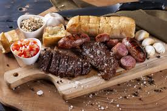

Cortes de Carne e Suas Aplicações
Conheça os principais cortes de carne e suas melhores utilizações para valorizar cada prato.
Filé Mignon
Um dos cortes mais macios, ideal para grelhados rápidos e pratos finos.
Picanha
Sabor intenso, muito utilizada em churrascos. A gordura traz suculência e sabor.

Costela
Corte com sabor intenso, ideal para cozimento lento, como em assados e caldos.

Alcatra
Versátil e econômica, indicada para bifes e refogados rápidos.
Receitas Fáceis com Carne
Bife Acebolado
Simples e delicioso, ideal para refeições rápidas com sabor caseiro.
Estrogonofe de Carne
Receita cremosa e clássica, perfeita para acompanhar arroz e batata palha.

Churrasco
Tradicional e saboroso, ideal para momentos especiais e com amigos.
Dicas para Preparar a Carne Perfeita
Para realçar o sabor e garantir a textura perfeita, siga estas dicas:
- Escolha o corte certo: Cada prato combina melhor com um corte específico.
- Respeite o tempo de cozimento: Cozinhe a carne conforme indicado para preservar sua suculência.
- Deixe a carne descansar: Após o cozimento, deixe a carne descansar alguns minutos para reter os sucos.